Recipe Inspector
A prototype of how the studio could show a pgmvox board: the map as a recipe of operations, each one's output kept, inspected and diffed. The data is real: the library's Vale example, replayed operation by operation from examples/vale/scripts/land.py.
Section
Click two points on the map to cut a section. Solid: after this step. Dashed: before it.
Two versions of the Vale recipe. Version B moves the butte 15 blocks west and raises it to 90, and widens the canyon to 32 with no ledges. Both were run through the same interpreter. A diff has two layers: the steps whose parameters were edited, and the steps whose effect changed because ground under them moved.
Step by step
Edited 2 steps; 6 steps' effect changed. Moving the butte re-routed the roads (3,261 columns) and the footpath. That is what a person most needs warned about: an edit is local in the recipe and not local on the ground.
The ground, A against B
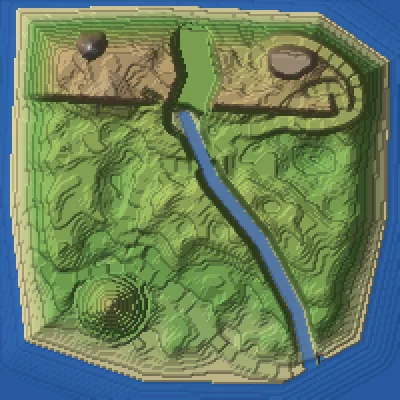
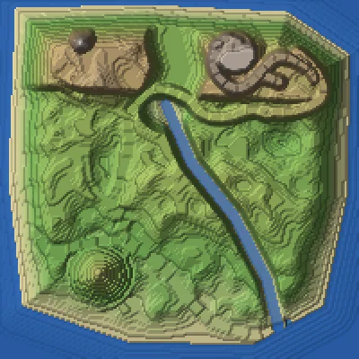
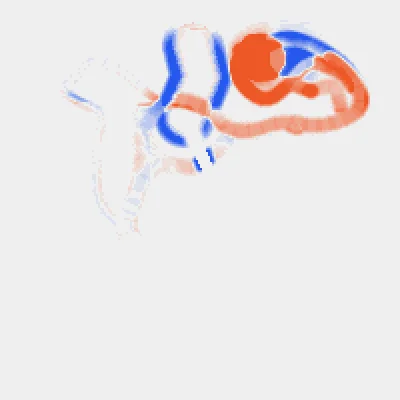
GET /api/map/vale/recipe/diff?from=41&to=42
{"edited": [
{"id": "butte", "params": {"at": [[45,-74],[30,-72]], "top": [82,90]}},
{"id": "canyon", "params": {"width": [22,32], "ledges": [3,0]}}],
"effect_changed": ["butte","sea","canyon","river","roads","footpath"],
"ground": {"raised": 3187, "cut": 1890}}
How pgmvox's grammar turns a plan into made ground. Each picture adds one rule to the one before it, on the same crop. The rules read only the grid of sections; the blocks belong to the style, so one plan can be built in another style.
Brittlebush III: the studio plan, one rule at a time
Claywork: the same grammar, another style
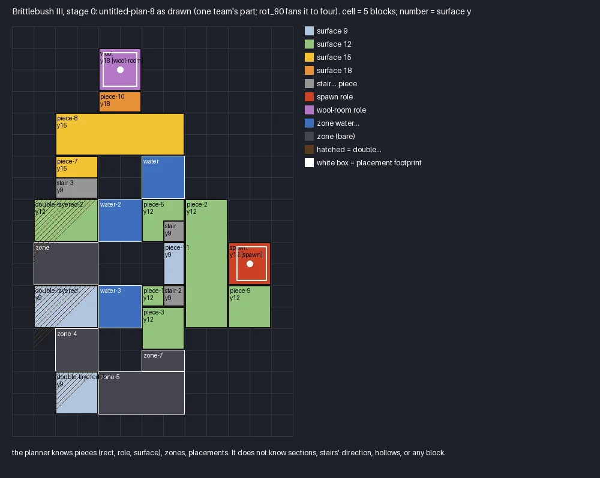
untitled-plan-8 as drawn in the studio's planner. It knows pieces, roles, surfaces, zones and placements, and no block.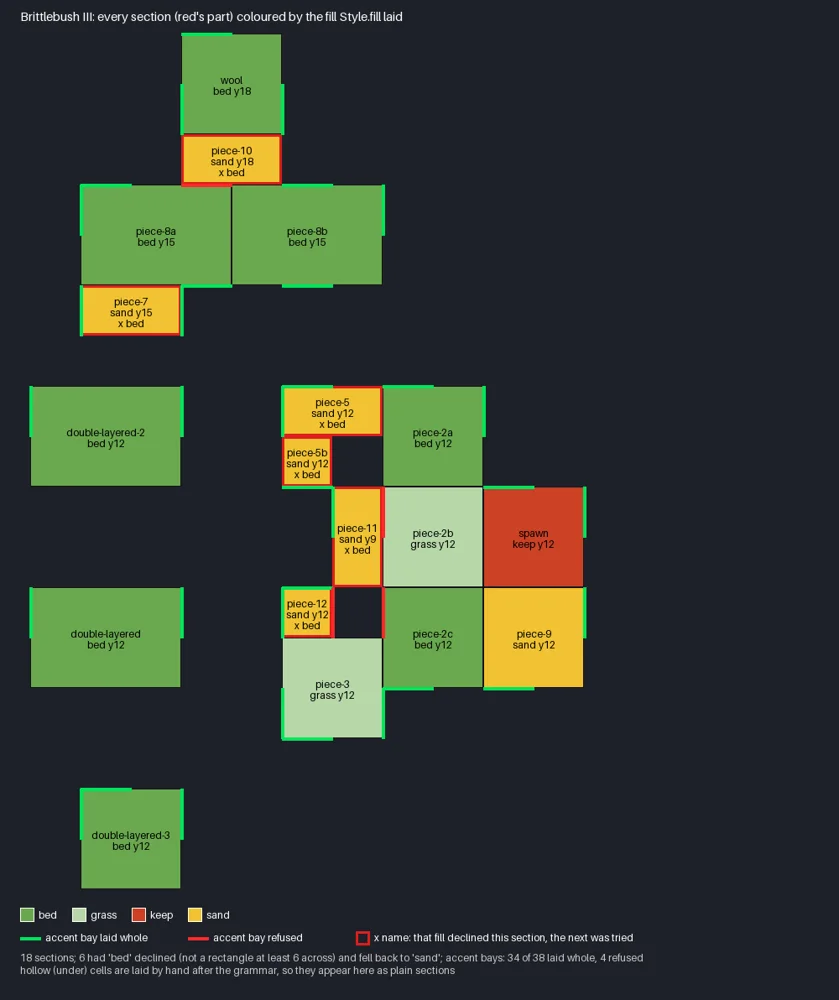
bed (under 6 across), and the 4 of 38 accent bays refused.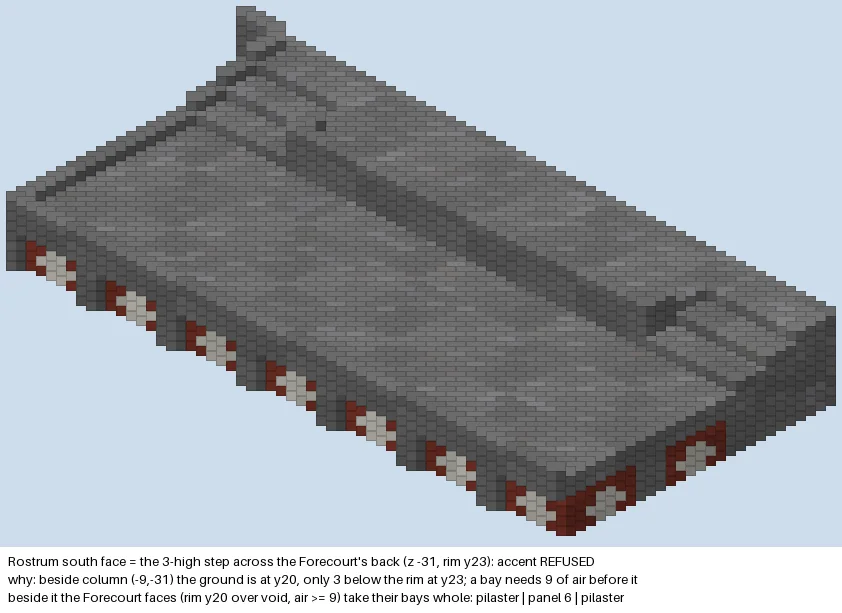
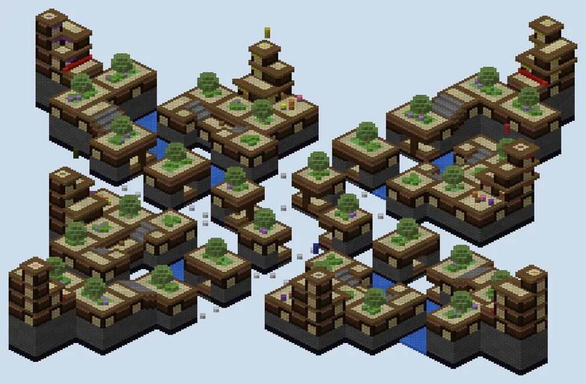
An fbm term
pgmvox's noise.fbm(shape, cell, octaves, seed, gain): a random lattice every cell blocks, smoothly interpolated, then the same at half the cell and gain times the strength, summed. ridged is 1 − |fbm|: crests where the noise crosses zero.
Each octave, and their sum as ground
This page draws value noise with a cubic interpolation of the same shape as pgmvox's lattice, so the pictures behave as the library's do but are not its exact numbers. The sum is drawn as ground at 44 ± amplitude, shaded the way the Steps tab shades a heightfield.
The studio's own ReliefSolver, called on a 200 × 200 square with the marks below. Marks are constraints solved together: what one mark does depends on the reach, the rim and every other mark, and is only visible after the whole field is solved.
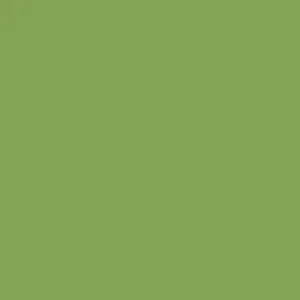
point(r 6, h 40), reach 0: one mark decides the whole footprint, which rises to 40.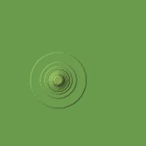
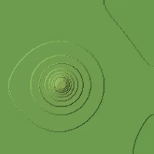
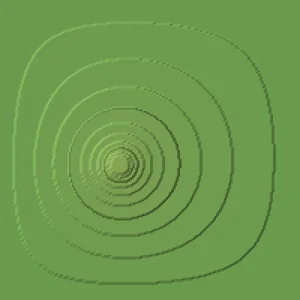
rim at 30: the dome fills the shape, held down at its edge.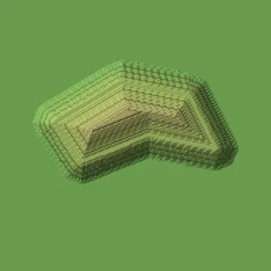
push of +14 with a crown of 10: the drawn ring is the landform's plan; the crown follows its spine.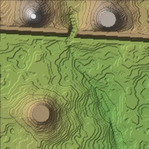
The heights are only half the recipe. These are the steps after the last height operation, from the same Vale run.
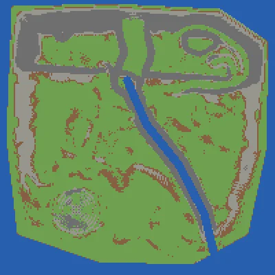
paint.lay top by angle: grass to 30°, coarse dirt to 42°, andesite to 55°, stone past it.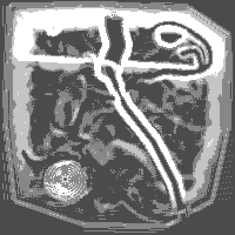
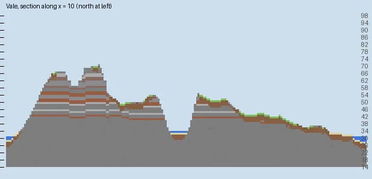
paint.beds: six weighted beds of stone, andesite, clay and terracotta, dipping and folded by a noise offset.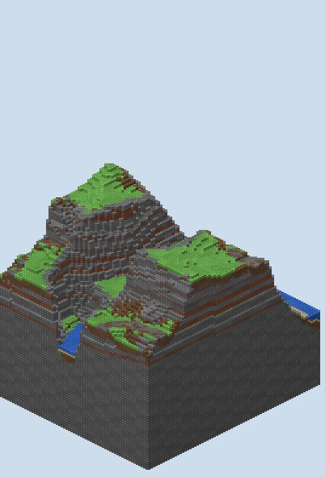
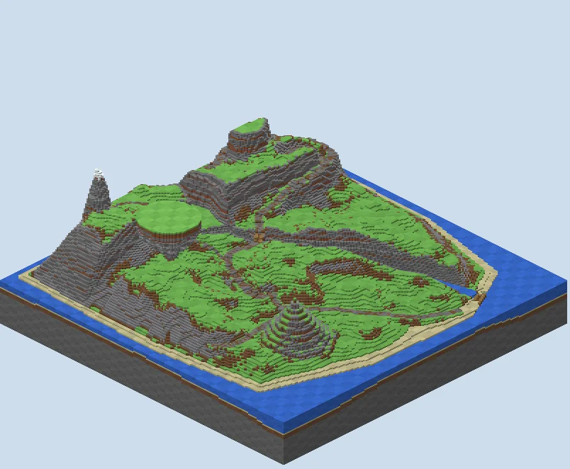